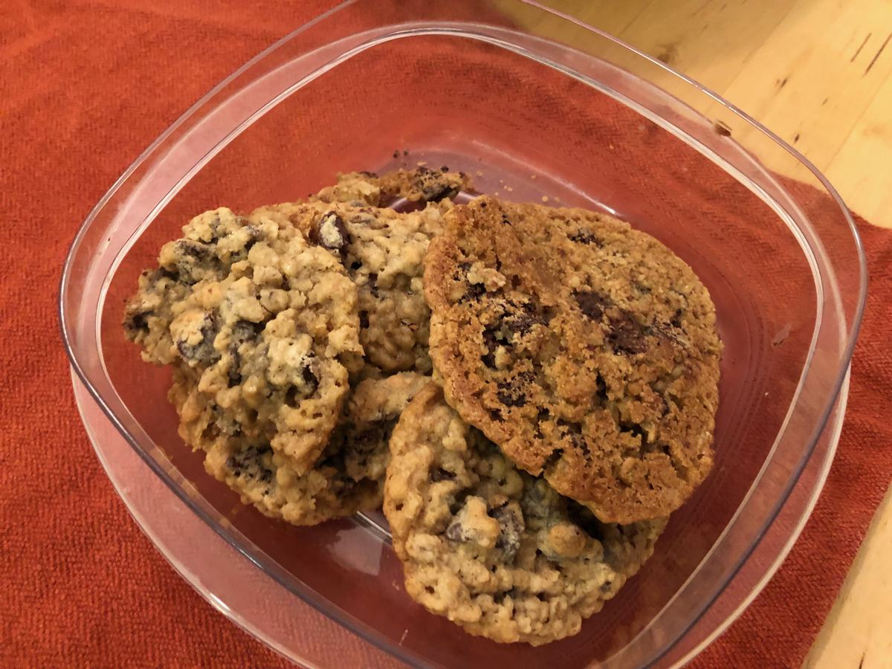

Based on https://www.verybestbaking.com/toll-house/recipes/original-nestle-toll-house-chocolate-chip-cookies
Personal rating: 4 / 5

2.25 cups all-purpose flour
1 tsp baking soda
1 tsp salt
1 cup (2 sticks) butter, softened
3/4 cup granulated sugar
3/4 cup brown sugar, packed
1 tsp vanilla extract
2 large eggs
2 cups (12 oz) chocolate chips
1 cup chopped nuts or additional 1-2 Tbsp flour
Soften butter at room temperature
Preheat oven to 375F
In a small bowl, combine flour, baking soda, and salt (1)
In a large mixing bowl, combine butter and sugars until creamy using a hand mixer (2)
Measure out rounded Tbsp of dough on a light colored ungreased baking sheet
Bake 9-11 minutes until golden brown. Cool on a wire rack